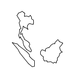

选择要编辑的要素#
Selecting a feature to edit
正如我们在设计 ShapeEditor 这一节中讨论的那样，GeoDjango 内置的地图小部件一次只能显示一个特征。为了在地图上显示所有 shapefile 的特征，我们将必须直接使用 OpenLayers，并结合瓦片地图服务器 (Tile Map Server) 和自定义基于 AJAX 的点击事件处理程序。基本的工作流程如下所示：
让我们从实现瓦片地图服务器 (Tile Map Server) 开始，然后看看如何使用 OpenLayers、结合自定义点击事件处理程序和一些服务器端 AJAX 代码，以响应用户点击地图时的操作。
As we discussed in the section on designing the ShapeEditor, GeoDjango’s built-in map widgets can only display a single feature at a time. In order to display a map with all the shapefile’s features on it, we will have to use OpenLayers directly, along with a Tile Map Server and a custom AJAX-based click handler. The basic workflow will look like this:
Let’s start by implementing the Tile Map Server, and then see what’s involved in using OpenLayers, along with a custom click-handler and some server-side AJAX code, to respond when the user clicks on the map.
实现 Tile 地图服务器#
Implementing Tile Map Server
正如我们在附录中讨论的“Python 地理空间开发的 Web 框架”（下载链接见前言）所述， 瓦片地图服务协议（Tile Map Server Protocol，TMS） 是一种简单的 RESTful 协议，用于提供地图瓦片。TMS 协议包括调用识别各种可显示地图的方法，以及提供可用地图瓦片的信息，并允许访问地图瓦片图像本身。
让我们简要回顾一下 TMS 协议使用的术语：
瓦片地图服务器（Tile Map Server） 是实现 TMS 协议的整体 Web 服务器。
瓦片地图服务（Tile Map Service） 提供对特定一组地图的访问。单个瓦片地图服务器可以托管多个瓦片地图服务。
瓦片地图（Tile Map） 是地球表面全部或部分的完整地图，显示特定的要素集或以特定样式显示。一个瓦片地图服务可以提供对多个瓦片地图的访问。
瓦片集（Tile Set） 是在给定缩放级别显示特定瓦片地图的瓦片集合。
瓦片（Tile） 是表示由瓦片集显示的地图的一小部分的单个地图图像。
这听起来可能有些复杂，但实际上并不太难。我们将实现一个仅包含一个瓦片地图服务的瓦片地图服务器，我们将其称为“ShapeEditor 瓦片地图服务”。每个上传的 shapefile 将有一个瓦片地图，我们将支持标准缩放级别范围的瓦片集。最后，我们将使用 Mapnik 渲染瓦片集中的单个瓦片。
遵循 Django 将大型复杂系统分解为独立自包含应用程序的原则，我们将在 ShapeEditor 项目中将瓦片地图服务器实现为一个独立的应用程序。首先进入 ShapeEditor 项目目录并输入以下命令:
python manage.py startapp tms
这将在顶级目录中创建我们的 tms 应用程序，使其成为一个可重用的应用程序。将新创建的目录移动到 shapeEditor 子目录中，可以使用鼠标操作，也可以输入以下命令:
mv tms shapeEditor
这使得瓦片地图服务器特定于我们的项目。然后我们需要通过编辑项目的 settings.py 模块并添加以下条目到 INSTALLED_APPS 列表的末尾来启用该应用程序:
'shapeEditor.tms',
接下来，我们希望将瓦片地图服务器的 URL 作为 ShapeEditor 项目的一部分提供。为此，请编辑全局 urls.py 模块（位于主 ShapeEditor 目录中），并在第一个 urlpatterns = … 语句中添加以下高亮行:
urlpatterns = patterns('',
url(r'^editor/', include('shapeEditor.editor.urls')),
url(r'^tms/', include('shapeEditor.tms.urls')),
)
现在我们想要定义瓦片地图服务器应用程序提供的各个 URL。为此，在 tms 目录中创建一个名为 urls.py 的新模块，并在此模块中输入以下内容:
# shapeEditor.tms 应用的 URLConf
from django.conf.urls import patterns, url
urlpatterns = patterns('shapeEditor.tms.views',
url(r'^$', 'root'), # "/tms" 调用 root()
url(r'^(?P<version>[0-9.]+)$', 'service'), # 例如 "/tms/1.0" 调用 service(version="1.0")
url(r'^(?P<version>[0-9.]+)/' +
r'(?P<shapefile_id>\d+)$', 'tileMap'), # 例如 "/tms/1.0/2" 调用 tileMap(version="1.0", shapefile_id=2)
url(r'^(?P<version>[0-9.]+)/' +
r'(?P<shapefile_id>\d+)/(?P<zoom>\d+)/' +
r'(?P<x>\d+)/(?P<y>\d+)\.png$', 'tile'), # 例如 "/tms/1.0/2/3/4/5" 调用 tile(version="1.0", shapefile_id=2, zoom=3, x=4, y=5)
)
这些 URL 模式比我们之前使用的更复杂，因为我们现在从 URL 中提取参数。例如，考虑以下 URL:
http://127.0.0.1:8000/tms/1.0
它将由 tms 应用程序 urls.py 模块中的第二个正则表达式匹配:
^(?P<version>[0-9.]+)$
这个正则表达式将提取 URL 中的 1.0 部分并将其赋值给名为 version 的参数。然后，该参数被传递给与此 URL 模式关联的视图函数，如下所示:
tileMap(version="1.0")
通过这种方式，我们的每个 URL 模式都将传入的 RESTful URL 映射到 tms 应用程序内的适当视图函数。包含的注释给出了正则表达式如何映射到视图函数的示例。
现在让我们设置这些视图函数。编辑 tms 目录中的 views.py 模块，并在此模块中添加以下内容:
from django.http import HttpResponse
def root(request):
return HttpResponse("Tile Map Server")
def service(request, version):
return HttpResponse("Tile Map Service")
def tileMap(request, version, shapefile_id):
return HttpResponse("Tile Map")
def tile(request, version, shapefile_id, zoom, x, y):
return HttpResponse("Tile")
显然，这些只是占位符视图函数，但它们为我们提供了瓦片地图服务器的基本结构。
为了测试这是否有效，请运行 python manage.py runserver 命令启动 ShapeEditor 服务器，并在 Web 浏览器中访问 http://127.0.0.1:8000/tms。您应该看到输入到占位符 root() 视图函数中的文本。
让我们让这个顶层视图函数做一些有用的事情。返回 tms 应用程序的 views.py 模块，并将 root() 函数更改为如下所示:
def root(request):
try:
baseURL = request.build_absolute_uri()
xml = []
xml.append('<?xml version="1.0" encoding="utf-8" ?>')
xml.append('<Services>')
xml.append(' <TileMapService ' +
'title="ShapeEditor Tile Map Service" ' +
'version="1.0" href="' + baseURL + '/1.0"/>')
xml.append('</Services>')
return HttpResponse("\n".join(xml), mimetype="text/xml")
except:
traceback.print_exc()
return HttpResponse("Error")
您还需要在模块顶部添加以下导入语句:
import traceback
此视图函数返回一个 XML 格式的响应，描述 TMS 服务器支持的唯一的瓦片地图服务。此瓦片地图服务由版本号 1.0 标识（瓦片地图服务通常由版本号标识）。如果您现在访问 http://127.0.0.1:8000/tms，您将在 Web 浏览器中看到 TMS 响应：
如您所见，这提供了 TMS 服务器提供的瓦片地图服务列表。OpenLayers 将使用此信息访问我们的瓦片地图服务。
备注
错误处理
注意我们在 TMS 视图函数周围包装了一个 try…except 语句，并使用 traceback 标准库模块在出现问题时打印出异常。 我们这样做是因为我们的代码将直接由 OpenLayers 使用 AJAX 调用；Django 会帮助处理异常并向调用者返回 HTML 错误页面，但在这种情况下，如果您的代码中有错误，OpenLayers 不会显示该页面。相反，您只会看到破碎的图像图标而不是地图，错误本身仍然是个谜。 通过将我们的 Python 代码包装在 try…except 语句中，我们可以捕获 Python 代码中的任何异常并打印它们。这将导致错误出现在 Django 的 Web 服务器日志中，因此我们可以看到出了什么问题。每当您编写 Python 中的 AJAX 请求处理程序时，这都是一个有用的技术。
我们现在准备实现瓦片地图服务本身。再次编辑 view.py 模块，并将 service() 函数更改为如下所示:
def service(request, version):
try:
if version != "1.0":
raise Http404
baseURL = request.build_absolute_uri()
xml = []
xml.append('<?xml version="1.0" encoding="utf-8" ?>')
xml.append('<TileMapService version="1.0" services="' +
baseURL + '">')
xml.append(' <Title>ShapeEditor Tile Map Service' +
'</Title>')
xml.append(' <Abstract></Abstract>')
xml.append(' <TileMaps>')
for shapefile in Shapefile.objects.all():
id = str(shapefile.id)
xml.append(' <TileMap title="' +
shapefile.filename + '"')
xml.append(' srs="EPSG:4326"')
xml.append(' href="'+baseURL+'/'+id+'"/>')
xml.append(' </TileMaps>')
xml.append('</TileMapService>')
return HttpResponse("\n".join(xml), mimetype="text/xml")
except:
traceback.print_exc()
return HttpResponse("Error")
您还需要在模块顶部添加以下导入语句:
from django.http import Http404
from geodjango.shapeEditor.models import Shapefile
请注意，如果版本号错误，此函数将引发 Http404 异常。此异常告诉 Django 返回 HTTP 404 错误，这是使用错误 URL 时的标准错误响应。
假设版本号正确，我们将遍历数据库中的各种 Shapefile 对象，将每个上传的 shapefile 列为瓦片地图。
如果您保存此文件并在 Web 浏览器中输入 http://127.0.0.1:8000/tms/1.0，您应该会看到可用瓦片地图的列表，以 XML 格式显示：
接下来我们需要实现 tileMap() 函数，以显示给定瓦片地图可用的各种瓦片集。然而，在此之前，我们需要了解一些关于缩放级别的概念。
正如我们所见，切片地图允许用户放大和缩小以查看地图内容。这种缩放是通过控制地图的缩放级别来完成的。通常，缩放级别指定为一个简单的数字：缩放级别零是地图完全缩小的状态，缩放级别 1 是地图放大一次的状态，依此类推。
让我们首先考虑地图完全缩小（即缩放级别 0）时的情况。在这种情况下，我们希望整个地球表面仅由两个地图瓦片覆盖：

在此缩放级别下，每个地图瓦片将覆盖 180 度的纬度和经度。如果每个瓦片是 256 像素见方，则每个像素将覆盖 180 / 256 = 0.703125 个地图单位，在这种情况下，“地图单位”是纬度或经度的一个度。这个数字在计算瓦片地图时非常重要。
现在，每当我们放大（例如从缩放级别 0 放大到缩放级别 1）时，可见区域的宽度和高度减半。例如，在缩放级别 1，地球表面将显示为以下八个瓦片序列：
按照这个模式，我们可以使用以下公式计算给定缩放级别下地图上单个像素覆盖的地图单位数：
由于我们将在 TMS 服务器中使用此公式，让我们继续将以下代码添加到 tms.py 模块的末尾:
import math
def _unitsPerPixel(zoomLevel):
return 0.703125 / math.pow(2, zoomLevel)
备注
请注意，我们以一个下划线开头函数名；这是 Python 中命名模块内“私有”函数的标准约定。
您还需要在文件顶部添加 import math 语句。
接下来，我们需要在模块顶部添加一些常量来定义每个地图瓦片的大小以及我们支持的缩放级别数量:
MAX_ZOOM_LEVEL = 10
TILE_WIDTH = 256
TILE_HEIGHT = 256
有了这些，我们终于准备好实现 tileMap() 函数，以返回给定 shapefile 的瓦片地图可用的瓦片集信息。编辑此函数，使其如下所示:
def tileMap(request, version, shapefile_id):
if version != "1.0":
raise Http404
try:
shapefile = Shapefile.objects.get(id=shapefile_id)
except Shapefile.DoesNotExist:
raise Http404
try:
baseURL = request.build_absolute_uri()
xml = []
xml.append('<?xml version="1.0" encoding="utf-8" ?>')
xml.append('<TileMap version="1.0" ' +
'tilemapservice="' + baseURL + '">')
xml.append(' <Title>' + shapefile.filename + '</Title>')
xml.append(' <Abstract></Abstract>')
xml.append(' <SRS>EPSG:4326</SRS>')
xml.append(' <BoundingBox minx="-180" miny="-90" ' +
'maxx="180" maxy="90"/>')
xml.append(' <Origin x="-180" y="-90"/>')
xml.append(' <TileFormat width="' + str(TILE_WIDTH) +
'" height="' + str(TILE_HEIGHT) + '" ' +
'mime-type="image/png" extension="png"/>')
xml.append(' <TileSets profile="global-geodetic">')
for zoomLevel in range(0, MAX_ZOOM_LEVEL+1):
unitsPerPixel = _unitsPerPixel(zoomLevel)
xml.append(' <TileSet href="' +
baseURL + '/' + str(zoomLevel) +
'" units-per-pixel="'+str(unitsPerPixel) +
'" order="' + str(zoomLevel) + '"/>')
xml.append(' </TileSets>')
xml.append('</TileMap>')
return HttpResponse("\n".join(xml), mimetype="text/xml")
except:
traceback.print_exc()
return HttpResponse("Error")
如您所见，我们首先对版本和 shapefile ID 进行一些基本错误检查，然后遍历可用的缩放级别以提供可用瓦片集的信息。
如果您保存更改并在 Web 浏览器中输入 http://127.0.0.1:8000/tms/1.0/2，您应该看到关于记录 ID 为 2 的 shapefile 对象的瓦片地图的以下信息：
请注意，我们总共提供了十一个缩放级别，从零到十，并为每个缩放级别计算了适当的每像素单位数。
我们现在已实现了实现自己的瓦片地图服务器所需的四个视图函数中的三个。对于最后一个函数 tile()，我们将编写自己的瓦片渲染器。tile() 函数接受瓦片地图服务版本、shapefile ID、缩放级别以及所需瓦片的 X 和 Y 坐标:
def tile(request, version, shapefile_id, zoom, x, y):
...
此函数需要生成适当的地图瓦片并将渲染的图像返回给调用者。在实现此函数之前，让我们退一步思考地图渲染应该是什么样子。
我们希望地图包含给定 shapefile 中各种要素的轮廓。然而，仅这些要素本身看起来并不十分有意义：
只有当这些要素在背景中显示 基础地图 时，我们才能看到它们所代表的内容：
因此，我们需要显示一个基础地图，在此基础上绘制要素。让我们构建这个基础地图，然后我们可以使用它以及 shapefile 的要素来渲染地图瓦片。
As we discussed in Bonus chapter, Web Frameworks for Python Geospatial Development (Download link available in preface) the Tile Map Server Protocol is a simple RESTful protocol for serving map tiles. The TMS protocol includes calls to identify the various maps which can be displayed, along with information about the available map tiles, as well as providing access to the map tile images themselves.
Let’s briefly review the terminology used by the TMS protocol:
A Tile Map Server is the overall web server which is implementing the TMS protocol.
A Tile Map Service provides access to a particular set of maps. There can be multiple Tile Map Services hosted by a single Tile Map Server.
A Tile Map is a complete map of all or part of the Earth’s surface, displaying a particular set of features or styled in a particular way. A Tile Map Service can provide access to more than one Tile Map.
A Tile Set is a collection of tiles displaying a given Tile Map at a given zoom level.
A Tile is a single map image representing a small portion of the map being displayed by the Tile Set.
This may sound confusing, but it’s actually not too bad. We’ll be implementing a Tile Map Server with just one Tile Map Service, which we’ll call the “ShapeEditor Tile Map Service”. There will be one Tile Map for each shapefile that has been uploaded, and we’ll support Tile Sets for a standard range of zoom levels. Finally, we’ll use Mapnik to render the individual Tiles within the Tile Set.
Following the Django principle of breaking a large and complex system down into separate self-contained applications, we will implement the Tile Map Server as a separate application within the shapeEditor project. Start by cd’ing into the shapeEditor project directory and type the following:
python manage.py startapp tms
This creates our tms application in the top-level directory, making it a reusable application. Move the newly-created directory into the shapeEditor sub-directory, either using the mouse or by typing the following command:
mv tms shapeEditor
This makes the Tile Map Server specific to our project. We then have to enable the application by editing our project’s settings.py module and adding the following entry to the end of the INSTALLED_APPS list:
'shapeEditor.tms',
Next, we want to make our Tile Map Server’s URLs available as part of the shapeEditor project. To do this, edit the global urls.py module (located inside the main shapeEditor directory), and add the following highlighted line to the first urlpatterns = … statement:
urlpatterns = patterns('',
url(r'^editor/', include('shapeEditor.editor.urls')),
url(r'^tms/', include('shapeEditor.tms.urls')),
)
We now want to define the individual URLs provided by our Tile Map Server application. To do this, create a new module named urls.py inside the tms directory, and enter the following into this module:
# URLConf for the shapeEditor.tms application.
from django.conf.urls import patterns, url
urlpatterns = patterns('shapeEditor.tms.views',
url(r'^$',
'root'), # "/tms" calls root()
url(r'^(?P<version>[0-9.]+)$',
'service'), # eg, "/tms/1.0" calls service(version="1.0")
url(r'^(?P<version>[0-9.]+)/' +
r'(?P<shapefile_id>\d+)$',
'tileMap'), # eg, "/tms/1.0/2" calls
# tileMap(version="1.0", shapefile_id=2)
url(r'^(?P<version>[0-9.]+)/' +
r'(?P<shapefile_id>\d+)/(?P<zoom>\d+)/' +
r'(?P<x>\d+)/(?P<y>\d+)\.png$',
'tile'), # eg, "/tms/1.0/2/3/4/5" calls
# tile(version="1.0", shapefile_id=2, zoom=3, x=4, y=5)
)
These URL patterns are more complicated than those we’ve used in the past, because we’re now extracting parameters from the URL. For example, consider the following URL:
http://127.0.0.1:8000/tms/1.0
This will be matched by the second regular expression in our tms application’s urls.py module:
^(?P<version>[0-9.]+)$
This regular expression will extract the 1.0 portion of the URL and assign it to a parameter named version. This parameter is then passed on to the view function associated with this URL pattern, as follows:
tileMap(version="1.0")
In this way, each of our URL patterns maps an incoming RESTful URL to the appropriate view function within our tms application. The included comments give examples of how the regular expressions will map to the view functions.
Let’s now set up these view functions. Edit the views.py module inside the tms directory, and add the following to this module:
from django.http import HttpResponse
def root(request):
return HttpResponse("Tile Map Server")
def service(request, version):
return HttpResponse("Tile Map Service")
def tileMap(request, version, shapefile_id):
return HttpResponse("Tile Map")
def tile(request, version, shapefile_id, zoom, x, y):
return HttpResponse("Tile")
Obviously these are only placeholder view functions, but they give us the basic structure for our Tile Map Server.
To test that this works, launch the ShapeEditor server by running the python manage.py runserver command, and point your web browser to http://127.0.0.1:8000/tms. You should see the text you entered into your placeholder root() view function.
Let’s make that top-level view function do something useful. Go back to the tms application’s views.py module, and change the root() function to look as follows:
def root(request):
try:
baseURL = request.build_absolute_uri()
xml = []
xml.append('<?xml version="1.0" encoding="utf-8" ?>')
xml.append('<Services>')
xml.append(' <TileMapService ' +
'title="ShapeEditor Tile Map Service" ' +
'version="1.0" href="' + baseURL + '/1.0"/>')
xml.append('</Services>')
return HttpResponse("\n".join(xml), mimetype="text/xml")
except:
traceback.print_exc()
return HttpResponse("Error")
You’ll also need to add the following import statement to the top of the module:
import traceback
This view function returns an XML-format response describing the one-and-only Tile Map Service supported by our TMS server. This Tile Map Service is identified by a version number, 1.0 (Tile Map Services are typically identified by version number). If you now go to http://127.0.0.1:8000/tms, you’ll see the TMS response displayed in your web browser:
As you can see, this provides a list of the Tile Map Services which this TMS server provides. OpenLayers will use this to access our Tile Map Service.
备注
Error handling
Notice that we’ve wrapped our TMS view function in a try… except statement, and used the traceback standard library module to print out the exception if anything goes wrong. We’re doing this because our code will be called directly by OpenLayers using AJAX; Django helpfully handles exceptions and returns an HTML error page to the caller, but in this case OpenLayers won’t display that page if there is an error in your code. Instead, all you’ll see are broken image icons instead of a map, and the error itself will remain a mystery. By wrapping our Python code in a try…except statement, we can catch any exceptions in our Python code and print them out. This will cause the error to appear in Django’s web server log, so we can see what went wrong. This is a useful technique to use whenever you write AJAX request handlers in Python.
We’re now ready to implement the Tile Map Service itself. Edit the view.py module again, and change the service() function to look like this:
def service(request, version):
try:
if version != "1.0":
raise Http404
baseURL = request.build_absolute_uri()
xml = []
xml.append('<?xml version="1.0" encoding="utf-8" ?>')
xml.append('<TileMapService version="1.0" services="' +
baseURL + '">')
xml.append(' <Title>ShapeEditor Tile Map Service' +
'</Title>')
xml.append(' <Abstract></Abstract>')
xml.append(' <TileMaps>')
for shapefile in Shapefile.objects.all():
id = str(shapefile.id)
xml.append(' <TileMap title="' +
shapefile.filename + '"')
xml.append(' srs="EPSG:4326"')
xml.append(' href="'+baseURL+'/'+id+'"/>')
xml.append(' </TileMaps>')
xml.append('</TileMapService>')
return HttpResponse("\n".join(xml), mimetype="text/xml")
except:
traceback.print_exc()
return HttpResponse("Error")
You’ll also need to add the following import statements to the top of the module:
from django.http import Http404
from geodjango.shapeEditor.models import Shapefile
Notice that this function raises an Http404 exception if the version number is wrong. This exception tells Django to return a HTTP 404 error, which is the standard error response when an incorrect URL has been used.
Assuming the version number is correct, we iterate over the various Shapefile objects in the database, listing each uploaded shapefile as a Tile Map.
If you save this file and enter http://127.0.0.1:8000/tms/1.0 into your web browser, you should see a list of the available tile maps, in XML format:
We next need to implement the tileMap() function to display the various Tile Sets available for a given Tile Map. Before we can do this, though, we’re going to have to learn a bit about the notion of zoom levels.
As we have seen, a slippy map lets the user zoom in and out to view the map’s contents. This zooming is done by controlling the map’s zoom level. Typically, a zoom level is specified as a simple number: zoom level zero is when the map is fully zoomed out, zoom level 1 is when the map is zoomed in once, and so on.
Let’s start by considering the map when it is zoomed out completely (in other words, zoom level 0). In this case, we want the entire Earth’s surface to be covered by just two map tiles:
Each map tile at this zoom level would cover 180 degrees of latitude and longitude. If each tile was 256 pixels square, this would mean that each pixel would cover 180 / 256 = 0.703125 map units, where in this case a “map unit” is a degree of latitude or longitude. This number is going to be very important when it comes to calculating the Tile Maps.
Now, whenever we zoom in (for example by going from zoom level 0 to zoom level 1), the width and height of the visible area is halved. For example, at zoom level 1 the Earth’s surface would be displayed as the following series of eight tiles:
Following this pattern, we can calculate the number of map units covered by a single pixel on the map, for a given zoom level, using the following formula:
Since we’ll be using this formula in our TMS server, let’s go ahead and add the following code to the end of our tms.py module:
def _unitsPerPixel(zoomLevel):
return 0.703125 / math.pow(2, zoomLevel)
备注
Notice that we start the function name with an underscore; this is a standard Python convention for naming “private” functions within a module.
You’ll also need to add an import math statement to the top of the file.
Next, we need to add some constants to the top of the module to define the size of each map tile, and how many zoom levels we support:
MAX_ZOOM_LEVEL = 10
TILE_WIDTH = 256
TILE_HEIGHT = 256
With all this, we’re finally ready to implement the tileMap() function to return information about the available Tile Sets for a given shapefile’s Tile Map. Edit this function to look as follows:
def tileMap(request, version, shapefile_id):
if version != "1.0":
raise Http404
try:
shapefile = Shapefile.objects.get(id=shapefile_id)
except Shapefile.DoesNotExist:
raise Http404
try:
baseURL = request.build_absolute_uri()
xml = []
xml.append('<?xml version="1.0" encoding="utf-8" ?>')
xml.append('<TileMap version="1.0" ' +
'tilemapservice="' + baseURL + '">')
xml.append(' <Title>' + shapefile.filename + '</Title>')
xml.append(' <Abstract></Abstract>')
xml.append(' <SRS>EPSG:4326</SRS>')
xml.append(' <BoundingBox minx="-180" miny="-90" ' +
'maxx="180" maxy="90"/>')
xml.append(' <Origin x="-180" y="-90"/>')
xml.append(' <TileFormat width="' + str(TILE_WIDTH) +
'" height="' + str(TILE_HEIGHT) + '" ' +
'mime-type="image/png" extension="png"/>')
xml.append(' <TileSets profile="global-geodetic">')
for zoomLevel in range(0, MAX_ZOOM_LEVEL+1):
unitsPerPixel = _unitsPerPixel(zoomLevel)
xml.append(' <TileSet href="' +
baseURL + '/' + str(zoomLevel) +
'" units-per-pixel="'+str(unitsPerPixel) +
'" order="' + str(zoomLevel) + '"/>')
xml.append(' </TileSets>')
xml.append('</TileMap>')
return HttpResponse("\n".join(xml), mimetype="text/xml")
except:
traceback.print_exc()
return HttpResponse("Error")
As you can see, we start with some basic error checking on the version and shapefile ID, and then iterate through the available zoom levels to provide information about the available Tile Sets.
If you save your changes and enter http://127.0.0.1:8000/tms/1.0/2 into your web browser, you should see the following information about the Tile Map for the shapefile object with record ID 2:
Notice that we provide a total of eleven zoom levels, from zero to ten, with an appropriately-calculated units-per-pixel value for each zoom level.
We have now implemented three of the four view functions required to implement our own Tile Map Server. For the final function, tile(), we are going to write our own tile renderer. The tile() function accepts a Tile Map Service version, a shapefile ID, a zoom level, and the X and Y coordinates for the desired tile:
def tile(request, version, shapefile_id, zoom, x, y):
...
This function needs to generate the appropriate map tile and return the rendered image back to the caller. Before we implement this function, let’s take a step back and think about what the map rendering should look like.
We want the map to include the outline of the various features within the given shapefile. However, by themselves these features won’t look very meaningful:
It isn’t until these features are shown in context, by displaying a base map behind the features, that we can see what they are supposed to represent:
Because of this, we’re going to have to display a base map on which the features themselves are drawn. Let’s build that base map, and then we can use this, along with the shapefile’s features, to render the map tiles.
设置基础地图#
Setting up the base map
为了我们的底图，我们将使用本书中多次使用的《世界边界数据集》。虽然当放大时这个数据集的效果不太好，但它作为一个底图非常适合在其上绘制shapefile的特征。
我们将首先创建一个数据库模型来保存底图的数据。由于底图将特定于我们的Tile Map Server应用程序，因此我们希望为此应用程序添加一个特定的数据库表。为此，请编辑tms应用程序目录中的models.py模块，并将此文件更改为如下所示:
from django.contrib.gis.db import models
class BaseMap(models.Model):
name = models.CharField(max_length=50)
geometry = models.MultiPolygonField(srid=4326)
objects = models.GeoManager()
def __unicode__(self):
return self.name
备注
不要忘记更改文件顶部的导入语句。
如您所见，我们正在存储国家名称以及它们的几何图形，这些几何图形恰好是MultiPolygons。现在，从命令行进入您的项目目录并键入:
% python manage.py syncdb
这将创建BaseMap对象使用的数据库表。
备注
请记住，Django 1.4中存在一个错误，导致地理空间字段无法自动创建。为了解决此问题，运行Postgresql命令行客户端:
$ psql shapeeditor
然后手动添加缺失的几何字段及其相关的空间索引，键入以下命令:
ALTER TABLE tms_basemap ADD COLUMN geometry geometry(MultiPolygon, 4326);
CREATE INDEX tms_basemap_geometry_id ON tms_basemap USING GIST(geometry);
现在我们有了存储底图的地方，让我们导入数据。将《世界边界数据集》shapefile的副本放在一个方便的位置，打开命令行窗口，并进入您的shapeEditor项目目录。然后键入:
% python manage.py shell
这将运行一个Python交互式shell，安装了您的项目设置和路径。现在创建以下变量，将文本替换为《世界边界数据集》shapefile的绝对路径：
>>> shapefile = "/path/to/TM_WORLD_BORDERS-0.3.shp"
然后键入以下内容：
>>> from django.contrib.gis.utils import LayerMapping
>>> from shapeEditor.tms.models import BaseMap
>>> mapping = LayerMapping(BaseMap, shapefile, {'name': "NAME", 'geometry': "MULTIPOLYGON"}, transform=False, encoding="iso-8859-1")
>>> mapping.save(strict=True, verbose=True)
我们使用GeoDjango的LayerMapping模块将数据从shapefile导入到我们的数据库中。导入过程中，各国将按顺序显示，这将花费几秒钟。
完成后，您可以通过在交互式shell中键入命令来检查导入的数据，例如：
>>> print BaseMap.objects.count()
246
>>> print BaseMap.objects.all()
[<BaseMap: Antigua and Barbuda>, <BaseMap: Algeria>, <BaseMap: Azerbaijan>, <BaseMap: Albania>, <BaseMap: Armenia>, <BaseMap: Angola>, <BaseMap: American Samoa>, <BaseMap: Argentina>, <BaseMap: Australia>, <BaseMap: Bahrain>, <BaseMap: Barbados>, <BaseMap: Bermuda>, <BaseMap: Bahamas>, <BaseMap: Bangladesh>, <BaseMap: Belize>, <BaseMap: Bosnia and Herzegovina>, <BaseMap: Bolivia>, <BaseMap: Burma>, <BaseMap: Benin>, <BaseMap: Solomon Islands>, ...]
如果您愿意，可以进行更多的操作；Django教程包括了如何使用交互式shell探索数据对象的多个示例。
因为这个底图将成为ShapeEditor项目的一部分（该应用程序没有它就无法运行），如果Django能够将这些数据视为项目源代码的一部分，那会很好。这样，如果我们需要从头开始重建数据库，底图将自动重新安装。
Django允许您通过创建**fixture**来实现这一点。Fixture是一组可以按需加载到数据库中的数据，可以手动加载，也可以在数据库初始化时自动加载。我们将把底图数据保存到一个fixture中，以便Django根据需要重新加载数据。
在tms应用程序目录中创建一个名为fixtures的目录。然后，在终端窗口中进入shapeEditor项目目录并键入:
% python manage.py dumpdata tms > shapeEditor/tms/fixtures/initial_data.json
这将为tms应用程序创建一个名为initial_data.json的fixture。如其名称所示，如果Django需要重新初始化数据库，fixture的内容将自动加载。
现在我们有了一个底图，让我们用它来实现我们的瓦片渲染代码。
For our base map, we’re going to use the World Borders Dataset we’ve used several times throughout this book. While this dataset doesn’t look great when zoomed right in, it works well as a base map on which we can draw the shapefile’s features.
We’ll start by creating a database model to hold the base map’s data. Because the base map will be specific to our Tile Map Server application, we want to add a database table specific to this application. To do this, edit the models.py module inside the tms application directory, and change this file to look like the following:
from django.contrib.gis.db import models
class BaseMap(models.Model):
name = models.CharField(max_length=50)
geometry = models.MultiPolygonField(srid=4326)
objects = models.GeoManager()
def __unicode__(self):
return self.name
备注
Don’t forget to change the import statement at the top of the file.
As you can see, we’re storing the country names as well as their geometries, which happen to be MultiPolygons. Now from the command line, cd into your project directory and type:
% python manage.py syncdb
This will create the database table used by the BaseMap object.
备注
Remember that there’s a bug in Django 1.4 that prevents the geospatial fields from being created automatically. To fix this, run the Postgresql command-line client:
$ psql shapeeditor
You can then manually add the missing geometry field and its associated spatial index by typing in the following commands:
ALTER TABLE tms_basemap ADD COLUMN geometry geometry(MultiPolygon, 4326);
CREATE INDEX tms_basemap_geometry_id ON tms_basemap USING GIST(geometry);
Now that we have somewhere to store the base map, let’s import the data. Place a copy of the World Borders Dataset shapefile somewhere convenient, open up a command line window, and cd into your shapeEditor project directory. Then type:
% python manage.py shell
This runs a Python interactive shell with your project’s settings and paths installed. Now create the following variable, replacing the text with the absolute path to the World Borders Dataset’s shapefile:
>>> shapefile = "/path/to/TM_WORLD_BORDERS-0.3.shp"
Then type the following:
>>> from django.contrib.gis.utils import LayerMapping
>>> from shapeEditor.tms.models import BaseMap
>>> mapping = LayerMapping(BaseMap, shapefile, {'name' : "NAME",
'geometry' : "MULTIPOLYGON"}, transform=False, encoding="iso-8859-1")
>>> mapping.save(strict=True, verbose=True)
We’re using GeoDjango’s LayerMapping module to import the data from this shapefile into our database. The various countries will be displayed as they are imported, which will take a few seconds.
Once this has been done, you can check the imported data by typing commands into the interactive shell, for example:
>>> print BaseMap.objects.count()
246
>>> print BaseMap.objects.all()
[<BaseMap: Antigua and Barbuda>, <BaseMap: Algeria>, <BaseMap:
Azerbaijan>, <BaseMap: Albania>, <BaseMap: Armenia>, <BaseMap: Angola>,
<BaseMap: American Samoa>, <BaseMap: Argentina>, <BaseMap: Australia>,
<BaseMap: Bahrain>, <BaseMap: Barbados>, <BaseMap: Bermuda>, <BaseMap:
Bahamas>, <BaseMap: Bangladesh>, <BaseMap: Belize>, <BaseMap: Bosnia and
Herzegovina>, <BaseMap: Bolivia>, <BaseMap: Burma>, <BaseMap: Benin>,
<BaseMap: Solomon Islands>, '...(remaining elements truncated)...']
Feel free to play some more if you want; the Django tutorial includes several examples of exploring your data objects using the interactive shell.
Because this base map is going to be part of the ShapeEditor project itself (the application won’t run without it), it would be good if Django could treat that data as part of the project’s source code. That way, if we ever had to rebuild the database from scratch, the base map would be reinstalled automatically.
Django allows you to do this by creating a fixture. A fixture is a set of data that can be loaded into the database on demand, either manually, or automatically when the database is initialized. We’ll save our base map data into a fixture so that Django can reload that data as required.
Create a directory named fixtures within the tms application directory. Then, in a terminal window, cd into the shapeEditor project directory and type:
% python manage.py dumpdata tms > shapeEditor/tms/fixtures/initial_data.json
This will create a fixture named initial_data.json for the tms application. As the name suggests, the contents of this fixture will be loaded automatically if Django ever has to re-initialize the database.
Now that we have a base map, let’s use it to implement our tile rendering code.
Tile 渲染#
Tile rendering
通过我们对Mapnik的了解，我们将实现TMS服务器的 tile() 函数。我们生成的地图将包含两层： 底图层 显示底图， 特征层 显示导入的shapefile中的特征。由于我们的所有数据都存储在PostGIS数据库中，因此我们将为这两层使用mapnik.PostGIS数据源。
我们的 tile() 函数将包括五个步骤：
解析查询参数。
设置地图。
定义底图层。
定义特征层。
渲染地图。
让我们依次处理这些步骤。
Using our knowledge of Mapnik, we’re going to implement the TMS server’s tile() function. Our generated map will consist of two layers: a base layer showing the base map, and a feature layer showing the features in the imported shapefile. Since all our data is stored in a PostGIS database, we’ll be using a mapnik.PostGIS datasource for both layers.
Our tile() function will involve five steps:
Parse the query parameters.
Set up the map.
Define the base layer.
Define the feature layer.
Render the map.
Let’s work through each of these in turn.
解析查询参数#
Parsing the query parameters
编辑 tms 应用程序的 views.py 模块，并删除我们在 tile() 函数中编写的占位代码。我们将逐步添加解析代码，首先从基本的错误检查代码开始，以确保版本号正确且 Shapefile 存在，并且再次使用 try…except 语句来捕获拼写错误和其他错误:
try:
if version != "1.0":
raise Http404
try:
shapefile = Shapefile.objects.get(id=shapefile_id)
except Shapefile.DoesNotExist:
raise Http404
现在，我们需要将查询参数（Django 传递给我们的字符串）转换为整数，以便进行处理:
zoom = int(zoom)
x = int(x)
y = int(y)
接下来，我们检查缩放级别是否正确:
if zoom < 0 or zoom > MAX_ZOOM_LEVEL:
raise Http404
下一步是将提供的 x 和 y 参数转换为瓦片所覆盖的最小和最大纬度、经度值。这需要使用我们之前定义的 _unitsPerPixel() 函数，来计算当前缩放级别下瓦片覆盖的地球表面范围:
xExtent = _unitsPerPixel(zoom) * TILE_WIDTH
yExtent = _unitsPerPixel(zoom) * TILE_HEIGHT
minLong = x * xExtent - 180.0
minLat = y * yExtent - 90.0
maxLong = minLong + xExtent
maxLat = minLat + yExtent
最后，我们可以添加一些基本的错误检查，以确保瓦片的坐标有效:
if (minLong < -180 or maxLong > 180 or
minLat < -90 or maxLat > 90):
raise Http404
Edit the tms application’s views.py module, and delete the dummy code we had in the tile() function. We’ll add our parsing code one step at a time, starting with some basic error-checking code to ensure the version number is correct and that the shapefile exists, and once again wrapping our code in a try…except statement to catch typos and other errors:
try:
if version != "1.0":
raise Http404
try:
shapefile = Shapefile.objects.get(id=shapefile_id)
except Shapefile.DoesNotExist:
raise Http404
We now need to convert the query parameters (which Django passes to us as strings) into integers so that we can work with them:
zoom = int(zoom)
x = int(x)
y = int(y)
We can now check that the zoom level is correct:
if zoom < 0 or zoom > MAX_ZOOM_LEVEL:
raise Http404
Our next step is to convert the supplied x and y parameters into the minimum and maximum latitude and longitude values covered by the tile. This requires us to use the _unitsPerPixel() function we defined earlier to calculate the amount of the Earth’s surface covered by the tile for the current zoom level:
xExtent = _unitsPerPixel(zoom) * TILE_WIDTH
yExtent = _unitsPerPixel(zoom) * TILE_HEIGHT
minLong = x * xExtent - 180.0
minLat = y * yExtent - 90.0
maxLong = minLong + xExtent
maxLat = minLat + yExtent
Finally, we can add some rudimentary error checking to ensure that the tile’s coordinates are valid:
if (minLong < -180 or maxLong > 180 or
minLat < -90 or maxLat > 90):
raise Http404
设置地图#
Setting up the map
现在我们准备创建 mapnik.Map 对象来表示地图。这很简单:
map = mapnik.Map(TILE_WIDTH, TILE_HEIGHT,
"+proj=longlat +datum=WGS84")
map.background = mapnik.Color("#7391ad")
We’re now ready to create the mapnik.Map object to represent the map. This is trivial:
map = mapnik.Map(TILE_WIDTH, TILE_HEIGHT,
"+proj=longlat +datum=WGS84")
map.background = mapnik.Color("#7391ad")
定义基础层#
Defining the base layer
现在，我们需要定义用于绘制基础地图的图层。为此，我们必须为该图层设置一个 mapnik.PostGIS 数据源:
dbSettings = settings.DATABASES['default']
datasource = \
mapnik.PostGIS(user=dbSettings['USER'],
password=dbSettings['PASSWORD'],
dbname=dbSettings['NAME'],
table='tms_basemap',
srid=4326,
geometry_field="geometry",
geometry_table='tms_basemap')
正如你所见，我们从项目的 settings 模块中获取数据库名称、用户名和密码。然后，我们使用这些设置创建一个 PostGIS 数据源。使用此数据源，我们现在可以创建基础图层本身:
baseLayer = mapnik.Layer("baseLayer")
baseLayer.datasource = datasource
baseLayer.styles.append("baseLayerStyle")
接下来，我们需要为图层设置样式。在本例中，我们将使用一个包含两个符号化器（symbolizer）的规则（rule）： 一个 PolygonSymbolizer 用于绘制基础地图多边形的内部，另一个 LineSymbolizer 用于绘制多边形的轮廓:
rule = mapnik.Rule()
rule.symbols.append(
mapnik.PolygonSymbolizer(mapnik.Color("#b5d19c")))
rule.symbols.append(
mapnik.LineSymbolizer(mapnik.Color("#404040"), 0.2))
style = mapnik.Style()
style.rules.append(rule)
最后，我们可以将基础图层及其样式添加到地图中:
map.append_style("baseLayerStyle", style)
map.layers.append(baseLayer)
We now want to define the layer which draws our base map. To do this, we have to set up a mapnik.PostGIS datasource for the layer:
dbSettings = settings.DATABASES['default']
datasource = \
mapnik.PostGIS(user=dbSettings['USER'],
password=dbSettings['PASSWORD'],
dbname=dbSettings['NAME'],
table='tms_basemap',
srid=4326,
geometry_field="geometry",
geometry_table='tms_basemap')
As you can see, we get the name of the database, the username, and the password from our project’s settings module. We then create a PostGIS datasource using these settings. With this data source, we can now create the base layer itself:
baseLayer = mapnik.Layer("baseLayer")
baseLayer.datasource = datasource
baseLayer.styles.append("baseLayerStyle")
We now need to set up the layer’s style. In this case, we’ll use a single rule with two symbolizers: a PolygonSymbolizer which draws the interior of the base map’s polygons, and a LineSymbolizer to draw the polygon outlines:
rule = mapnik.Rule()
rule.symbols.append(
mapnik.PolygonSymbolizer(mapnik.Color("#b5d19c")))
rule.symbols.append(
mapnik.LineSymbolizer(mapnik.Color("#404040"), 0.2))
style = mapnik.Style()
style.rules.append(rule)
Finally, we can add the base layer and its style to the map:
map.append_style("baseLayerStyle", style)
map.layers.append(baseLayer)
定义要素层#
Defining the feature layer
我们的下一个任务是添加另一个图层，以便将 Shapefile 的要素绘制到地图上。 同样，我们需要为新图层设置一个 mapnik.PostGIS 数据源:
geometry_field = utils.calc_geometry_field(shapefile.geom_type)
query = '(select ' + geometry_field \
+ ' from "shared_feature" where' \
+ ' shapefile_id=' + str(shapefile.id) + ') as geom'
datasource = \
mapnik.PostGIS(user=dbSettings['USER'],
password=dbSettings['PASSWORD'],
dbname=dbSettings['NAME'],
table=query,
srid=4326,
geometry_field=geometryField,
geometry_table='shared_feature')
在这里，我们调用 utils.calc_geometry_field() 来确定 shared_feature 表中存储几何数据的字段。
现在，我们可以创建新图层本身:
featureLayer = mapnik.Layer("featureLayer")
featureLayer.datasource = datasource
featureLayer.styles.append("featureLayerStyle")
接下来，我们需要为要素图层定义样式。与之前类似，我们仍然使用单一规则，但这次会根据要素的类型选择不同的符号化器（symbolizer）:
rule = mapnik.Rule()
if shapefile.geom_type in ["Point", "MultiPoint"]:
rule.symbols.append(mapnik.PointSymbolizer())
elif shapefile.geom_type in ["LineString", "MultiLineString"]:
rule.symbols.append(
mapnik.LineSymbolizer(mapnik.Color("#000000"), 0.5))
elif shapefile.geom_type in ["Polygon", "MultiPolygon"]:
rule.symbols.append(
mapnik.PolygonSymbolizer(mapnik.Color("#f7edee")))
rule.symbols.append(
mapnik.LineSymbolizer(mapnik.Color("#000000"), 0.5))
style = mapnik.Style()
style.rules.append(rule)
最后，我们将新的要素图层添加到地图中:
map.append_style("featureLayerStyle", style)
map.layers.append(featureLayer)
Our next task is to add another layer to draw the shapefile’s features onto the map. Once again, we’ll set up a mapnik.PostGIS datasource for the new layer:
geometry_field = utils.calc_geometry_field(shapefile.geom_type)
query = '(select ' + geometry_field \
+ ' from "shared_feature" where' \
+ ' shapefile_id=' + str(shapefile.id) + ') as geom'
datasource = \
mapnik.PostGIS(user=dbSettings['USER'],
password=dbSettings['PASSWORD'],
dbname=dbSettings['NAME'],
table=query,
srid=4326,
geometry_field=geometryField,
geometry_table='shared_feature')
In this case, we are calling utils.calc_geometry_field() to see which field in the shared_feature table contains the geometry we’re going to display.
We’re now ready to create the new layer itself:
featureLayer = mapnik.Layer("featureLayer")
featureLayer.datasource = datasource
featureLayer.styles.append("featureLayerStyle")
Next, we want to define the styles used by the feature layer. As before, we’ll have just a single rule, but in this case we’ll use different symbolizers depending on the type of feature we are displaying:
rule = mapnik.Rule()
if shapefile.geom_type in ["Point", "MultiPoint"]:
rule.symbols.append(mapnik.PointSymbolizer())
elif shapefile.geom_type in ["LineString", "MultiLineString"]:
rule.symbols.append(
mapnik.LineSymbolizer(mapnik.Color("#000000"), 0.5))
elif shapefile.geom_type in ["Polygon", "MultiPolygon"]:
rule.symbols.append(
mapnik.PolygonSymbolizer(mapnik.Color("#f7edee")))
rule.symbols.append(
mapnik.LineSymbolizer(mapnik.Color("#000000"), 0.5))
style = mapnik.Style()
style.rules.append(rule)
Finally, we can add our new feature layer to the map:
map.append_style("featureLayerStyle", style)
map.layers.append(featureLayer)
渲染地图图块#
Rendering the map tile
在 附录章节：Python 地理空间开发的 Web 框架 中，我们已经探讨了如何使用 Mapnik 来渲染地图图像。 渲染地图瓦片的基本过程是相同的，不同之处在于我们不会将结果存储为磁盘上的图像文件。 相反，我们会创建一个 mapnik.Image 对象，将其转换为 PNG 格式的原始图像数据，并使用 HttpResponse 对象将数据返回给调用方:
map.zoom_to_box(mapnik.Box2d(minLong, minLat,
maxLong, maxLat))
image = mapnik.Image(TILE_WIDTH, TILE_HEIGHT)
mapnik.render(map, image)
imageData = image.tostring('png')
return HttpResponse(imageData, mimetype="image/png")
现在，我们只需要在函数的末尾添加错误捕获代码:
except:
traceback.print_exc()
return HttpResponse("Error")
至此，我们已完成 Tile Map Server 的 tile() 函数实现。 现在，让我们整理代码并进行测试。
We looked at using Mapnik to render map images in Bonus Chapter, Web Frameworks for Python Geospatial Development. The basic process of rendering a map tile is the same, except that we won’t be storing the results into an image file on disk. Instead, we’ll create a mapnik.Image object, convert it into raw image data in PNG format, and return that data back to the caller using an HttpResponse object:
map.zoom_to_box(mapnik.Box2d(minLong, minLat,
maxLong, maxLat))
image = mapnik.Image(TILE_WIDTH, TILE_HEIGHT)
mapnik.render(map, image)
imageData = image.tostring('png')
return HttpResponse(imageData, mimetype="image/png")
All that’s left now is to add our error-catching code to the end of the function:
except:
traceback.print_exc()
return HttpResponse("Error")
That completes the implementation of our Tile Map Server’s tile() function. Let’s tidy up and do some testing.
完成图块地图服务器#
Completing the Tile Map Server
由于我们在 views.py 模块中引用了一些新模块，因此需要在文件顶部添加额外的 import 语句:
from django.conf import settings
import mapnik
import utils
理论上，我们的 Tile Map Server 现在应该可以运行了。让我们来测试一下。 如果你的 Django Web 服务器尚未运行，请进入 shapeEditor 项目目录，并输入以下命令:
% python manage.py runserver
启动你的 Web 浏览器，并在地址栏中输入以下 URL:
http://127.0.0.1:8000/tms/1.0/2/0/0/0.png
如果一切正常，你应该会在浏览器中看到一个 256 × 256 像素的地图瓦片：
备注
遇到问题？
如果出现错误，可能有两个常见原因：代码输入错误，或者 Shapefile 的记录 ID 不正确。 请检查你运行 python manage.py runserver 命令的终端窗口中的 Web 服务器日志。
当 Python 发生异常时，错误的回溯信息将会打印在该窗口中。 这些信息可以帮助你判断是否存在语法错误、其他错误，或者 Http404 异常。
如果你遇到 Http404 异常，很可能是 Shapefile 的记录 ID 不正确。 URL 的结构如下所示：
http://path/to/tms/<version>/<shapefile_id>/<zoom>/<x>/<y>.png
如果你按照本章的内容顺序进行操作，你之前导入的 World Borders Dataset Shapefile 的记录 ID 应该是 2。 但如果你在此期间导入了其他 Shapefile，或者在管理界面中创建了更多 Shapefile 记录，你可能需要使用不同的记录 ID。
要查看某个 Shapefile 的记录 ID，可以访问 http://127.0.0.1:8000/editor， 然后点击目标 Shapefile 对应的 Edit 超链接。
你可能会看到 Page Not Found 错误，但该超链接的最后一部分就是该 Shapefile 的记录 ID。 将之前 URL 中的记录 ID 替换为正确的 ID，地图瓦片应该就会正确显示。
当你在 Web 浏览器中成功看到地图瓦片后，恭喜你！ 你已经实现了一个可运行的 Tile Map Server！ 🎉
Because we’ve referred to some new modules in our views.py module, we’ll have to add some extra import statements to the top of the file:
from django.conf import settings
import mapnik
import utils
In theory, our Tile Map Server should now be ready to go. Let’s test it out. If you don’t currently have the Django web server running, cd into the shapeEditor project directory and type:
% python manage.py runserver
Start up your web browser and enter the following URL into your browser’s address bar:
http://127.0.0.1:8000/tms/1.0/2/0/0/0.png
All going well, you should see a 256 x 256 pixel map tile appear in your web browser:
备注
Problems?
If an error occurs, there are two likely causes: you might have made a mistake typing in the code, or you might have the record ID of the shapefile wrong. Check the web server log in the terminal window you used to run the python manage.py runserver command;
when a Python exception occurs, the traceback will be printed out in this window. This will tell you if you have a syntax error, some other error, or if an Http404 exception was raised.
If you do get an Http404 exception, it’s most likely because you’re using the wrong record ID for the shapefile. The URL is structured like this:
http://path/to/tms/<version>/<shapefile_id>/<zoom>/<x>/<y>.png
If you’ve been working through this chapter in order, the record ID of the World Borders Dataset shapefile you imported earlier should be 2, but if you’ve imported other shapefiles in the meantime, or created more shapefile records while playing with the admin interface, you may need to use a different record ID. To see what record ID a given shapefile has, go to http://127.0.0.1:8000/ editor and click on the Edit hyperlink for the desired shapefile. You’ll see a Page Not Found error, but the final part of the hyperlink will be the record ID of the shapefile. Replace the record ID in the previous URL with the correct ID, and the map tile should appear.
Once you’ve reached the point of seeing the previous image in your web browser, you deserve a pat on the back: congratulations, you have just implemented your own working Tile Map Server!
使用 OpenLayers 显示地图#
Using OpenLayers to display the map
现在我们的 TMS 服务器已经运行起来了，我们可以使用 OpenLayers 库在 slippy map 中显示渲染的地图瓦片。 这个 slippy map 将用于我们的 edit_shapefile 视图函数，以显示 Shapefile 的所有要素， 允许用户选择要编辑的要素。
让我们实现 edit_shapefile 视图。 编辑 editor 应用的 urls.py 模块，并添加以下高亮部分:
urlpatterns = patterns('shapeEditor.editor.views',
url(r'^$', 'list_shapefiles'),
url(r'^import$', 'import_shapefile'),
url(r'^export/(?P<shapefile_id>\d+)$', 'export_shapefile'),
url(r'^edit/(?P<shapefile_id>\d+)$', 'edit_shapefile'),
)
这样，任何符合 /editor/edit/N 形式的 URL 都会被传递给 edit_shapefile() 视图函数。
接下来，实现该函数。 编辑 editor 应用的 views.py 模块，并添加以下代码:
def edit_shapefile(request, shapefile_id):
try:
shapefile = Shapefile.objects.get(id=shapefile_id)
except Shapefile.DoesNotExist:
return HttpResponseNotFound()
tms_url = "http://"+request.get_host()+"/tms/"
return render(request, "select_feature.html",
{'shapefile': shapefile,
'tms_url': tms_url})
可以看到，我们获取了目标 Shapefile 对象，计算访问 TMS 服务器的 URL， 然后将它们传递给名为 select_feature.html 的模板。 真正的地图渲染将在该模板中完成。
现在，我们需要编写该模板。 在 editor 应用的 templates 目录下创建一个名为 select_feature.html 的新文件， 然后输入以下内容：
<html>
<head>
<title>ShapeEditor</title>
<style type="text/css">
div#map {
width: 600px;
height: 400px;
border: 1px solid #ccc;
}
</style>
</head>
<body>
<h1>Edit Shapefile</h1>
<b>Please choose a feature to edit</b>
<br/>
<div id="map" class="map"></div>
<br/>
<div style="margin-left:20px">
<button type="button"
onClick='window.location="/editor";'>
Cancel
</button>
</div>
</body>
</html>
这只是模板的基本框架，但它已经可以使用了。 在终端窗口运行 Django 服务器（python manage.py runserver）， 然后访问 http://127.0.0.1:8000/editor，点击某个 Shapefile 旁的 Edit 超链接， 你应该会看到 选择要素页面 的基本框架:
.. image:: ./img/463-0.png
- align:
center
请注意，我们在 HTML 中创建了一个 <div> 元素用于存放 OpenLayers 地图， 并使用 CSS 设定了地图的固定大小和边框。 但目前地图仍然不会显示，因为我们还没有编写 JavaScript 代码来启动 OpenLayers。 接下来，让我们来实现这一部分。
在模板的 <head> 部分添加以下 <script> 标签:
<script src="http://openlayers.org/api/OpenLayers.js">
</script>
<script type="text/javascript">
function init() {}
</script>
同时，将 <body> 标签修改为:
<body onload="init()">
这里包含两个 <script> 标签： 第一个用于从 http://openlayers.org 加载 OpenLayers.js 库， 第二个用于编写我们即将实现的 JavaScript 代码，以创建地图。 此外，我们定义了一个 init() JavaScript 函数，它会在页面加载时被调用。
接下来，替换 function init() {} 这一行代码，改为以下内容：
function init() {
map = new OpenLayers.Map('map',
{maxResolution: 0.703125,
numZoomLevels: 11});
layer = new OpenLayers.Layer.TMS('TMS',
"{{ tms_url }}",
{serviceVersion: "1.0",
layername: "{{ shapefile.id }}",
type: 'png'});
map.addLayer(layer);
map.zoomToMaxExtent();
}
即使你没有使用过 JavaScript，这段代码的逻辑也相对清晰： - OpenLayers.Map 对象创建一个 slippy map。 - OpenLayers.Layer.TMS 对象定义了一个从 TMS 服务器获取地图数据的图层。 - 然后我们将该图层添加到地图，并将地图缩放到最大范围，以便用户可以看到整个世界地图。
注意： - OpenLayers.Map 需要传递 div 的 ID 以确定地图的容器，并可以接受一个选项字典： - maxResolution 指定地图的最大分辨率。 - numZoomLevels 设定地图的缩放级别数。 - OpenLayers.Layer.TMS 需要传递 TMS 服务器的 URL`（由 Python 视图函数传递给模板）， 还需要 `Tile Map Service 版本以及 `layername`（即 Shapefile 的记录 ID）。
到此，我们已经完成了 基本的 slippy map 实现！ 保存更改，并确保 Django 服务器正在运行。 访问 http://127.0.0.1:8000/editor，点击某个 Shapefile 旁的 Edit 超链接， 你应该会看到工作中的 slippy map:
.. image:: ./img/465-0.png
- align:
center
你现在可以进行 缩放、平移、点击 交互。 当然，目前的交互功能仍然有限（除了 Cancel 按钮）， 但我们已经成功集成了 Tile Map Server 与 OpenLayers JavaScript 组件！ 🎉
备注
如果地图未能正确显示怎么办？
如果地图没有正确显示，可能有多个原因： - 首先，检查 Django 服务器日志，任何 Python 异常都会在那里打印出来。 - 如果 Django 服务器日志没有错误，请打开浏览器的 错误控制台，查看 JavaScript 是否报错。 - 由于我们现在正在编写 JavaScript 代码，错误信息可能会出现在 浏览器端，而不是 Django 服务器日志中。 - 在 Firefox 中，可以从 工具**（Tools）菜单中选择 **错误控制台**（Error Console）。 - 其他浏览器也有类似的 **JavaScript 错误日志窗口。
JavaScript 调试对 Web 开发人员来说可能会有些棘手，即使是有经验的开发者也是如此。 如果你遇到了困难，可以参考这篇文章进行 JavaScript 调试： http://www.webmonkey.com/2010/02/javascript_debugging_for_beginners
Now that we have our TMS server up and running, we can use the OpenLayers library to display the rendered map tiles within a slippy map. This slippy map will be used within our edit shapefile view function to display all the shapefile’s features, allowing the user to select a feature within the shapefile to edit.
Let’s implement this edit shapefile view. Edit the urls.py module within the editor application, and add the following highlighted entry to this file:
urlpatterns = patterns('shapeEditor.editor.views',
url(r'^$', 'list_shapefiles'),
url(r'^import$', 'import_shapefile'),
url(r'^export/(?P<shapefile_id>\d+)$', 'export_shapefile'),
url(r'^edit/(?P<shapefile_id>\d+)$', 'edit_shapefile'),
)
This will pass any incoming URLs of the form /editor/edit/N to the edit_shapefile() view function.
Let’s implement that function. Edit the editor application’s views.py module and add the following code:
def edit_shapefile(request, shapefile_id):
try:
shapefile = Shapefile.objects.get(id=shapefile_id)
except Shapefile.DoesNotExist:
return HttpResponseNotFound()
tms_url = "http://"+request.get_host()+"/tms/"
return render(request, "select_feature.html",
{'shapefile' : shapefile,
'tms_url': tms_url})
As you can see, we obtain the desired Shapefile object, calculate the URL used to access our TMS server, and pass both on to a template called select_feature.html. That template is where all the hard work will take place.
Now we need to write the template. Start by creating a new file named select_feature.html in the editor application’s templates directory, and enter the following into this file:
<html>
<head>
<title>ShapeEditor</title>
<style type="text/css">
div#map {
width: 600px;
height: 400px;
border: 1px solid #ccc;
}
</style>
</head>
<body>
<h1>Edit Shapefile</h1>
<b>Please choose a feature to edit</b>
<br/>
<div id="map" class="map"></div>
<br/>
<div style="margin-left:20px">
<button type="button"
onClick='window.location="/editor";'>
Cancel
</button>
</div>
</body>
</html>
This is only the basic outline for this template, but it gives us something to work with. With the Django development server running (python manage.py runserver in a terminal window), go to http://127.0.0.1:8000/editor click on the Edit hyperlink for a shapefile. You should see the basic outline for the select feature page:
.. image:: ./img/463-0.png
- align:
center
Notice that we created a <div> element to hold the OpenLayers map, and we use a CSS stylesheet to give the map a fixed size and border. The map itself isn’t being displayed yet, because we haven’t written the JavaScript code needed to launch OpenLayers. Let’s do that now.
Add the following <script> tags to the <head> section of your template:
<script src="http://openlayers.org/api/OpenLayers.js">
</script>
<script type="text/javascript">
function init() {}
</script>
Also, change the <body> tag definition to look like this:
<body onload="init()">
Notice that there are two <script> tags: the first loads the OpenLayers.js library from the http://openlayers.org website, while the second will hold the JavaScript code that we’ll write to create the map. We’ve also defined a JavaScript function called init() which will be called when the page is loaded.
Let’s implement that initialization function. Replace the line which says function init() {} with the following:
function init() {
map = new OpenLayers.Map('map',
{maxResolution: 0.703125,
numZoomLevels: 11});
layer = new OpenLayers.Layer.TMS('TMS',
"{{ tms_url }}",
{serviceVersion: "1.0",
layername: "{{ shapefile.id }}",
type: 'png'});
map.addLayer(layer);
map.zoomToMaxExtent();
}
Even if you haven’t used JavaScript before, this code should be quite straightforward: the first instruction creates an OpenLayers.Map object representing the slippy map. We then create an OpenLayers.Layer.TMS object to represent a map layer that takes data from a TMS server. Then we add the layer to the map, and zoom the map out as far as possible so that the user sees the entire world when the map is first displayed.
Notice that the Map object accepts the ID of the <div> tag in which to place the map, along with a dictionary of options. The maxResolution option defines the maximum resolution to use for the map, and the numZoomLevels option tells OpenLayers how many zoom levels the map should support.
For the Layer.TMS object, we pass in the URL used to access the Tile Map Server (which is a parameter passed to the template from our Python view), along with the version of the Tile Map Service to use and the name of the layer—which in our Tile Map Server is the record ID of the shapefile to display the features for.
That’s all we need to do to get a basic slippy map working with OpenLayers. Save your changes, start up the Django web server if it isn’t already running, and point your web browser to http://127.0.0.1:8000/editor. Click on the Edit hyperlink for the shapefile you imported, and you should see the working slippy map:
You can zoom in and out, pan around, and click to your heart’s content. Of course, nothing actually works yet (apart from the Cancel button), but we have got a slippy map working with our Tile Map Server and the OpenLayers JavaScript widget. That’s quite an achievement!
备注
What if it doesn’t work?
If the map isn’t being shown for some reason, there are several possible causes. First, check the Django web server log, as we are printing any Python exceptions there. If that doesn’t reveal the problem, look at your web browser’s error console window to see if there are any errors at the JavaScript level. Because we are now writing JavaScript code, error messages will appear within the web browser rather than in Django’s server log. In Firefox, you can view JavaScript errors by selecting the Error Console item from the Tools menu. Other browsers have similar windows for showing JavaScript errors.
JavaScript debugging can be quite tricky, even for people experienced with developing web-based applications. If you do get stuck, you may find the following article helpful: http:// www.webmonkey.com/2010/02/javascript_debugging_for_beginners
拦截鼠标点击#
Intercepting mouse clicks
当用户点击地图时，我们需要拦截该鼠标点击事件，识别用户点击的地图坐标，然后请求服务器识别被点击的要素（如果有的话）。为了拦截鼠标点击事件，我们需要创建一个自定义的 OpenLayers.Control 子类。按照 OpenLayers 的惯例，我们将这个子类添加到 OpenLayers 命名空间，并将其命名为 OpenLayers.Control.Click。定义好这个新控件后，我们可以创建其实例，并将其添加到地图上，以便它可以响应鼠标点击。
所有这些都需要使用 JavaScript 实现。这段代码可能有些复杂，所以我们一步一步来。编辑你的 selectFeature.html 文件，并在 <script> 标签内的 init() 函数之前添加以下代码：
OpenLayers.Control.Click = OpenLayers.Class(
OpenLayers.Control, {
defaultHandlerOptions: {
'single': true,
'double': false,
'pixelTolerance' : 0,
'stopSingle': false,
'stopDouble': false
},
initialize: function(options) {
this.handlerOptions = OpenLayers.Util.extend(
{}, this.defaultHandlerOptions);
OpenLayers.Control.prototype.initialize.apply(
this, arguments);
this.handler = new OpenLayers.Handler.Click(
this, {'click' : this.onClick}, this.handlerOptions);
},
onClick: function(e) {
alert("click")
}
}
);
不要太担心这里的具体细节——initialize() 函数有点像“黑魔法”，它创建了一个 OpenLayers.Control.Click 实例，并将其设置为 OpenLayers 控件。我们关注的重点是 defaultHandlerOptions 字典和 onClick() 函数。
defaultHandlerOptions 字典告诉 OpenLayers 你希望点击处理程序如何响应鼠标点击。在这个例子中，我们希望响应单击事件，但不响应双击事件（因为双击用于放大地图）。
onClick() 函数实际上是 OpenLayers.Control.Click 类的 JavaScript 方法。当用户在地图上点击时，这个方法会被调用——目前，我们只是简单地弹出一个 alert 对话框显示 “click”，但这足以确认点击控件已经生效。
现在，我们已经定义了新的点击控件，让我们将其添加到地图中。在 init() 函数的 } 之前立即添加以下代码：
var click = new OpenLayers.Control.Click();
map.addControl(click);
click.activate();
如你所见，我们创建了 OpenLayers.Control.Click 类的一个新实例，将其添加到地图中，并激活它。
完成所有这些代码后，我们现在可以重新加载 “Select Feature” 网页，并查看用户在地图上点击时会发生什么：
目前为止，一切正常。请注意，我们的点击处理程序仅拦截单击事件；如果你在地图上双击，它仍然会放大。
备注
如果你的地图无法正常工作，你可能在输入 JavaScript 代码时出了错。请打开浏览器的 JavaScript 控制台或日志窗口，并重新加载页面。如果 JavaScript 代码存在问题，错误信息会出现在该窗口中。
现在，让我们实现真正的 onClick() 函数，以响应用户的鼠标点击。当用户点击地图时，我们将使用 AJAX 请求向服务器发送被点击点的纬度和经度值。服务器将返回被点击要素的编辑页面 URL，如果没有点击到要素，则返回空字符串。如果返回了 URL，我们将重定向用户的浏览器到该 URL。
为了发起 AJAX 请求，我们将使用 OpenLayers.Request.GET 函数，并传入一个回调函数，当服务器返回响应时，该回调函数将被调用。我们先编写 AJAX 调用代码。
用以下代码替换之前的 onClick() 函数：
onClick: function(e) {
var coord = map.getLonLatFromViewPortPx(e.xy);
var request = OpenLayers.Request.GET({
url: "{{ find_feature_url }}",
params: {shapefile_id : {{ shapefile.id }},
latitude: coord.lat,
longitude: coord.lon},
callback : this.handleResponse
});
}
这个函数做了两件事：
通过 map.getLonLatFromViewPortPx() 方法获取被点击点的地图坐标。
创建 OpenLayers.Request.GET 对象，向服务器发送 AJAX 请求，并在收到响应时调用 handleResponse() 回调函数。
请注意，OpenLayers.Request.GET() 函数接受一组查询参数（在 params 里），以及要发送请求的 url，以及当接收到响应时调用的 callback 函数。我们使用模板参数 {{ find_feature_url }} 来指定请求的 URL。当模板加载时，该 URL 将由 edit_shapefile() 视图函数提供。发起请求时，查询参数将包含 shapefile 记录的 ID 以及点击的纬度和经度。
在编辑 select_feature.html 模板时，让我们实现回调函数。在 OpenLayers.Control.Click 类定义的 onClick() 函数 } 结束括号下方，添加以下函数：
handleResponse: function(request) {
if (request.status != 200) {
alert("Server returned a "+request.status+" error");
return;
};
if (request.responseText != "") {
window.location.href = request.responseText;
};
}
备注
确保在 onClick() 函数的结束括号后添加一个逗号，否则会导致 JavaScript 语法错误。就像在 Python 中一样，JavaScript 也需要逗号来分隔字典项。
即使你不熟悉 JavaScript，这个函数也很容易理解： - 如果服务器返回的 status 不是 200，则弹出错误消息。 - 否则，我们检查 responseText 是否为空，如果不为空，则重定向用户的浏览器到该 URL。
现在，我们已经实现了回调函数，让我们回到 view.py 模块，并定义 find_feature_url 参数，以便将其传递给我们创建的模板。在 edit_shapefile() 函数中添加以下高亮部分：
def edit_shapefile(request, shapefile_id):
try:
shapefile = Shapefile.objects.get(id=shapefile_id)
except Shapefile.DoesNotExist:
return HttpResponseNotFound()
tms_url = "http://"+request.get_host()+"/tms/"
find_feature_url = "http://" + request.get_host() \
+ "/editor/find_feature"
return render(request, "select_feature.html",
{'shapefile': shapefile,
'find_feature_url' : find_feature_url,
'tms_url': tms_url})
find_feature_url 模板参数将包含点击处理程序发送 AJAX 请求的 URL。该 URL 可能如下所示：
http://127.0.0.1:8000/editor/find_feature
我们的 onClick() 函数会为该请求附加 shapefile_id、latitude 和 longitude 查询参数，因此最终的 AJAX 请求将如下所示：
http://127.0.0.1:8000/editor/find_feature?shapefile_id=1&latitude=-38.1674&longitude=176.2344
现在，我们的点击处理程序已经可以正常运行，接下来我们准备实现 find_feature() 视图函数，以响应这些 AJAX 请求。
When the user clicks on the map, we want to intercept that mouse click, identify the map coordinate that the user clicked on, and then ask the server to identify the clicked-on feature (if any). To intercept mouse clicks, we will need to create a custom OpenLayers.Control subclass. We’ll follow the OpenLayers convention of adding the subclass to the OpenLayers namespace, by calling our new control OpenLayers. Control.Click. Once we’ve defined our new control, we can create an instance of the control and add it to the map so that the control can respond to mouse clicks.
All of this has to be done in JavaScript. The code can be a bit confusing, so let’s take this one step at a time. Edit your selectFeature.html file and add the following code to the <script> tag, immediately before your init() function:
OpenLayers.Control.Click = OpenLayers.Class(
OpenLayers.Control, {
defaultHandlerOptions: {
'single': true,
'double': false,
'pixelTolerance' : 0,
'stopSingle': false,
'stopDouble': false
},
initialize: function(options) {
this.handlerOptions = OpenLayers.Util.extend(
{}, this.defaultHandlerOptions);
OpenLayers.Control.prototype.initialize.apply(
this, arguments);
this.handler = new OpenLayers.Handler.Click(
this, {'click' : this.onClick}, this.handlerOptions);
},
onClick: function(e) {
alert("click")
}
}
);
Don’t worry too much about the details here—the initialize() function is a bit of black magic that creates a new OpenLayers.Control.Click instance and sets it up to run as an OpenLayers control. What is interesting to us is the defaultHandlerOptions dictionary, and the onClick() function.
The defaultHandlerOptions dictionary tells OpenLayers how you want the click handler to respond to mouse clicks. In this case, we want to respond to single clicks, but not double clicks (as these are used to zoom further in to the map).
The onClick() function is actually a JavaScript method for our OpenLayers. Control.Click class. This method will be called when the user clicks on the map—at the moment, all we’re doing is displaying an alert box with the message Click, but that’s enough to ensure that the click control is working.
Now that we’ve defined our new click control, let’s add it to the map. Add the following lines immediately before the closing } for the init() function:
var click = new OpenLayers.Control.Click();
map.addControl(click);
click.activate();
As you can see, we create a new instance of our OpenLayers.Control.Click class, add it to the map, and activate it.
With all this code written, we can now reload the Select Feature web page and see what happens when the user clicks on a map:
So far so good. Notice that our click handler only intercepts single clicks; if you double-click on the map, it will still zoom in.
备注
If your map isn’t working, you may have made a mistake typing in the JavaScript code. Open your browser’s JavaScript console or log window, and reload the page. An error message will appear in this window if there is a problem with your JavaScript code.
Let’s now implement the real onClick() function to respond to the user’s mouse- click. When the user clicks on the map, we’re going to send the clicked-on latitude and longitude value to the server using an AJAX request. The server will return the URL of the edit feature page for the clicked-on feature, or an empty string if no feature was clicked on. If a URL was returned, we’ll then redirect the user’s web browser to that URL.
To make the AJAX call, we’re going to use the OpenLayers.Request.GET function, passing in a callback function which will be called when a response is received back from the server. Let’s start by writing the AJAX call.
Replace our dummy onClick() function with the following:
onClick: function(e) {
var coord = map.getLonLatFromViewPortPx(e.xy);
var request = OpenLayers.Request.GET({
url: "{{ find_feature_url }}",
params: {shapefile_id : {{ shapefile.id }},
latitude: coord.lat,
longitude: coord.lon},
callback : this.handleResponse
});
}
This function does two things: it obtains the map coordinate that corresponds to the clicked-on point (by calling the map.getLonLatFromViewPortPx() method), and then it creates an OpenLayers.Request.GET object to send the AJAX request to the server and call the handleResponse() callback function when the response is received.
Notice that the OpenLayers.Request.GET() function accepts a set of query parameters (in the params entry), as well as a URL to send the request to (in the url entry) and a callback function to call when the response is received (in the callback entry). We’re using a template parameter, {{ find_feature_url }}, to select the URL to send the request to. This will be provided by our edit_shapeFile() view function when the template is loaded. When we make the request, the query parameters will consist of the record ID of the shapefile and the clicked-on latitude and longitude values.
While we’re editing the select_feature.html template, let’s go ahead and implement the callback function. Add the following function to the end of the OpenLayers.Control.Click class definition (immediately below the closing } for the onClick() function):
handleResponse: function(request) {
if (request.status != 200) {
alert("Server returned a "+request.status+" error");
return;
};
if (request.responseText != "") {
window.location.href = request.responseText;
};
}
备注
Make sure you add a comma after the onClick() function’s closing parenthesis, or you’ll get a JavaScript error. Just as with Python, you need to add commas to separate dictionary entries in JavaScript.
Even if you’re not familiar with JavaScript, this function should be easy to understand: if the response didn’t have a status value of 200, an error message is displayed. Otherwise, we check that the response text is not blank, and if so we redirect the user’s web browser to that URL.
Now that we’ve implemented our callback function, let’s go back to our view module and define the find_feature_url parameter which will get passed to the template we’ve created. Edit the view.py module to add the following highlighted lines to the edit_shapefile() function:
def edit_shapefile(request, shapefile_id):
try:
shapefile = Shapefile.objects.get(id=shapefile_id)
except Shapefile.DoesNotExist:
return HttpResponseNotFound()
tms_url = "http://"+request.get_host()+"/tms/"
find_feature_url = "http://" + request.get_host() \
+ "/editor/find_feature"
return render(request, "select_feature.html",
{'shapefile': shapefile,
'find_feature_url' : find_feature_url,
'tms_url': tms_url})
The find_feature_url template parameter will contain the URL the click handler will send its AJAX request to. This URL will look like the following:
http://127.0.0.1:8000/editor/find_feature
Our onClick() function will add shapefile_id, latitude and longitude query parameters to this request, so the AJAX request sent to the server will look like the following:
http://127.0.0.1:8000/editor/find_feature?shapefile_id=1&latitude=-38.1674&longitude=176.2344
With our click handler up and running, we’re now ready to start implementing the find_feature() view function to respond to these AJAX requests.
实现查找特征视图#
Implementing the find feature view
我们现在需要编写视图函数来接收 AJAX 请求，检查用户是否点击了某个要素（如果有的话），并返回一个合适的 URL，以便将用户的浏览器重定向到该要素的“编辑”页面。为此，我们将利用 GeoDjango 的 空间查询函数。
让我们先添加 find_feature 视图。编辑 views.py，并添加以下占位代码：
def find_feature(request):
return HttpResponse("")
返回一个空字符串告诉我们的 AJAX 回调函数没有点击任何要素。我们稍后会用适当的空间查询替换它。但首先，我们需要添加一个 URL 模式，使传入的请求能够被转发到 find_feature() 视图函数。打开 urls.py 模块，并在 URL 模式列表中添加以下条目：
url(r'^find_feature$', 'find_feature'),
现在，你应该可以运行 ShapeEditor，点击已上传 shapefile 的 编辑 超链接，查看显示 shapefile 内各个要素的地图，并在地图上某处点击。然而，系统的响应将是——什么也不会发生！ 这是因为我们的 find_feature() 函数返回了一个空字符串，因此系统认为用户没有点击任何要素，从而忽略了鼠标点击。
备注
在这种情况下，“什么也不会发生” 是个好消息。只要 Python 或 JavaScript 级别没有显示任何错误消息，就说明 AJAX 代码运行正常。因此，即便什么也没发生，仍然应该尝试一下，以确保代码没有错误。你可以在服务器接收的 HTTP 请求列表中看到 AJAX 请求。
在实现 find_feature() 之前，让我们先回顾一下“点击”一个要素的几何体意味着什么。ShapeEditor 支持各种几何类型：Point、LineString、Polygon、MultiPoint、MultiLineString、MultiPolygon 和 GeometryCollection。如果要检查用户是否点击了 Polygon 或 MultiPolygon，只需判断点击点是否在多边形的范围内即可。但 LineString 和 Point 没有内部区域（它们的面积总是零），所以点击点永远不可能“在” 这些几何体内部。它可能无限接近，但用户永远无法真正点击到 Point 或 LineString 内部。
这意味着以下 SQL 空间查询：
SELECT * FROM features WHERE ST_Contains(feature.geometry, clickPt)
将无法满足需求，因为点击点永远不会“在” Point 或 LineString 内部。相反，我们必须允许用户点击靠近要素的位置，而不是严格地点击在其内部。为此，我们将计算一个搜索半径（单位为地图单位），然后使用 DWithin() 空间查询函数，找到在点击点给定半径范围内的所有要素。
计算搜索半径
我们知道用户可能在地球表面的任何地方点击，并且我们的所有要素都存储为经纬度坐标。但地图坐标（经纬度值）与地球表面的实际距离之间的关系因地理位置不同而变化。例如，在赤道上 1° 大约等于 111 公里，而在瑞典，这个距离只有赤道的一半。
为了在全球范围内使用一致的搜索半径，我们将使用 PROJ.4 库，根据点击点的经纬度和所需的线性距离计算地图单位中的距离。让我们将这个函数添加到 shared.utils 模块中：
def calc_search_radius(latitude, longitude, distance):
geod = pyproj.Geod(ellps="WGS84")
x,y,angle = geod.fwd(longitude, latitude, 0, distance)
radius = y - latitude
x,y,angle = geod.fwd(longitude, latitude, 90, distance)
radius = max(radius, x - longitude)
x,y,angle = geod.fwd(longitude, latitude, 180, distance)
radius = max(radius, latitude - y)
x,y,angle = geod.fwd(longitude, latitude, 270, distance)
radius = max(radius, longitude - x)
return radius
该函数计算给定线性距离（以米为单位）在地图单位中的等效距离。它计算从起始位置出发，分别朝北、南、东、西四个方向移动指定距离后得到的新坐标。然后计算起始点与终点之间的纬度或经度差值：
最后，取这些差值中的最大值，并将其作为搜索半径（单位为经纬度）。
由于 utils.py 现在使用了 pyproj，请在模块顶部添加以下导入语句：
import pyproj
执行 DWithin() 空间查询
有了 calc_search_radius() 函数后，我们可以使用 DWithin() 空间查询，查找靠近点击点的所有要素。在 GeoDjango 中，我们使用 filter() 进行空间查询：
query = Feature.objects.filter(geometry__dwithin=(pt, radius))
这将创建一个查询集，只返回符合 dwithin 条件的 Feature 对象。GeoDjango 会自动将该查询转换为 SQL 语句，如下所示：
SELECT * FROM feature WHERE ST_DWithin(geometry, pt, radius)
备注
注意 geometry__dwithin 关键字参数包含两个下划线（__）。Django 使用双下划线将字段名与过滤函数名称分隔开。
现在我们可以最终实现 find_feature() 视图函数。编辑 views.py，并替换 find_feature() 的主体内容：
def find_feature(request):
try:
shapefile_id = int(request.GET['shapefile_id'])
latitude = float(request.GET['latitude'])
longitude = float(request.GET['longitude'])
shapefile = Shapefile.objects.get(id=shapefile_id)
pt = Point(longitude, latitude)
radius = utils.calc_search_radius(latitude, longitude, 100)
if shapefile.geom_type == "Point":
query = Feature.objects.filter(geom_point__dwithin=(pt, radius))
elif shapefile.geom_type in ["LineString", "MultiLineString"]:
query = Feature.objects.filter(geom_multilinestring__dwithin=(pt, radius))
elif shapefile.geom_type in ["Polygon", "MultiPolygon"]:
query = Feature.objects.filter(geom_multipolygon__dwithin=(pt, radius))
elif shapefile.geom_type == "MultiPoint":
query = Feature.objects.filter(geom_multipoint__dwithin=(pt, radius))
elif shapefile.geom_type == "GeometryCollection":
query = Feature.objects.filter(geom_geometrycollection__dwithin=(pt, radius))
else:
print("Unsupported geometry:", shapefile.geom_type)
return HttpResponse("")
if query.count() != 1:
return HttpResponse("")
feature = query[0]
return HttpResponse("/editor/edit_feature/" + str(shapefile_id) + "/" + str(feature.id))
except:
traceback.print_exc()
return HttpResponse("")
添加以下导入语句到 views.py 顶部：
import traceback
from django.contrib.gis.geos import Point
from shapeEditor.shared.models import Feature
from shapeEditor.shared import utils
测试点击功能
现在，你可以运行 Django 服务器并点击 shapefile 中的要素。如果点击海洋，什么也不会发生——但如果点击了一个要素，你的浏览器应该会跳转到如下 URL：
http://127.0.0.1:8000/editor/edit_feature/X/Y
其中，X 是 shapefile 的 ID，Y 是点击的要素 ID。恭喜！你已经实现了点击选择要素的功能！ 🎉
We now need to write the view function which receives the AJAX request, checks to see which feature was clicked on (if any), and returns a suitable URL to use to redirect the user’s web browser to the “edit” page for that clicked-on feature. To implement this, we’re going to make use of GeoDjango’s spatial query functions.
Let’s start by adding the find_feature view itself. To do this, edit views.py again and add the following placeholder code:
def find_feature(request):
return HttpResponse("")
Returning an empty string tells our AJAX callback function that no feature was clicked on. We’ll replace this with some proper spatial queries shortly. First, though, we need to add a URL pattern so that incoming requests will get forwarded to the find_feature() view function. Open up the editor application’s urls.py module and add the following entry to the URL pattern list:
url(r'^find_feature$', 'find_feature'),
You should now be able to run the ShapeEditor, click on the Edit hyperlink for an uploaded shapefile, see a map showing the various features within the shapefile, and click somewhere on the map. In response, the system should do—absolutely nothing! This is because our find_feature() function is returning an empty string, so the system thinks that the user didn’t click on a feature and so ignores the mouse-click.
备注
In this case, “absolutely nothing” is good news. As long as no error messages are being displayed, either at the Python or JavaScript level, this tells us that the AJAX code is running correctly. So go ahead and try this, even though nothing happens, just to make sure that you haven’t got any bugs in your code. You should see the AJAX calls in the list of incoming HTTP requests being received by the server.
Before we implement the find_feature() function, let’s take a step back and think what it means for the user to “click on” a feature’s geometry. The shapeEditor supports a complete range of possible geometry types: Point, LineString, Polygon, MultiPoint, MultiLineString, MultiPolygon, and GeometryCollection. Identifying if the user clicked on a Polygon or MultiPolygon feature is straightforward enough: we simply see if the clicked-on point is inside the polygon’s bounds. But because lines and points have no interior (their area will always be zero), a given coordinate could never be “inside” a Point or a LineString geometry. It might get infinitely close, but the user can never actually click inside a Point or a LineString.
This means that a spatial query of the form:
SELECT * FROM features WHERE ST_Contains(feature.geometry,clickPt)
This is not going to work, because the click point can never be inside a Point or a LineString geometry. Instead, we have to allow for the user clicking close to the feature rather than within it. To do this, we’ll calculate a search radius, in map units, and then use the DWithin() spatial query function to find all features within the given search radius of the clicked-on point.
Let’s start by calculating the search radius. We know that the user might click anywhere on the Earth’s surface, and that we are storing all our features in lat /long coordinates. We also know that the relationship between map coordinates (latitude/longitude values) and actual distances on the Earth’s surface varies widely depending on whereabouts on the Earth you are: a degree at the equator equals a distance of 111 kilometers, while a degree in Sweden is only half that far.
To allow for a consistent search radius everywhere in the world, we will use the PROJ.4 library to calculate the distance in map units given the clicked-on location and a desired linear distance. Let’s add this function to our shared.utils module:
def calc_search_radius(latitude, longitude, distance):
geod = pyproj.Geod(ellps="WGS84")
x,y,angle = geod.fwd(longitude, latitude, 0, distance)
radius = y-latitude
x,y,angle = geod.fwd(longitude, latitude, 90, distance)
radius = max(radius, x-longitude)
x,y,angle = geod.fwd(longitude, latitude, 180, distance)
radius = max(radius, latitude-y)
x,y,angle = geod.fwd(longitude, latitude, 270, distance)
radius = max(radius, longitude-x)
return radius
This function calculates the distance, in map units, of a given linear distance measured in meters. It calculates the lat/long coordinates for four points directly north, south, east, and west of the starting location and the given number of meters away from that point. It then calculates the difference in latitude or longitude between the starting location and the end point:
Finally, it takes the largest of these differences and returns it as the search radius, which is measured in degrees of latitude or longitude.
Because our utils.py module is now using pyproj, add the following import statement to the top of this module:
import pyproj
With the calc_search_radius() function written, we can now use the DWithin() spatial query to identify all features close to the clicked-on location. The general process of doing this in GeoDjango is to use the filter() function to create a spatial query, as follows:
query = Feature.objects.filter(geometry__dwithin=(pt, radius))
This creates a query set that returns only the Feature objects which match the given criteria. GeoDjango cleverly adds support for spatial queries to Django’s built-in filtering capabilities; in this case, the geometry__dwithin=(pt, radius) parameter tells GeoDjango to perform the dwithin() spatial query using the two supplied parameters on the field named geometry within the Feature object. Thus, this statement will be translated by GeoDjango into a spatial database query which looks something as follows:
SELECT * from feature WHERE ST_DWithin(geometry, pt, radius)
备注
Note that the geometry__dwithin keyword parameter includes two underscore characters; Django uses a double-underscore to separate the field name from the filter function’s name.
Knowing this, and having the utils.calc_search_radius() function implemented, we can finally implement our find_feature() view function. Edit views.py and replace the body of the find_feature() function with the following:
def find_feature(request):
try:
shapefile_id = int(request.GET['shapefile_id'])
latitude = float(request.GET['latitude'])
longitude = float(request.GET['longitude'])
shapefile = Shapefile.objects.get(id=shapefile_id)
pt = Point(longitude, latitude)
radius = utils.calc_search_radius(latitude, longitude, 100)
if shapefile.geom_type == "Point":
query = Feature.objects.filter(
geom_point__dwithin=(pt, radius))
elif shapefile.geom_type in ["LineString", "MultiLineString"]:
query = Feature.objects.filter(
geom_multilinestring__dwithin=(pt, radius))
elif shapefile.geom_type in ["Polygon", "MultiPolygon"]:
query = Feature.objects.filter(
geom_multipolygon__dwithin=(pt, radius))
elif shapefile.geom_type == "MultiPoint":
query = Feature.objects.filter(
geom_multipoint__dwithin=(pt, radius))
elif shapefile.geom_type == "GeometryCollection":
query = feature.objects.filter(
geom_geometrycollection__dwithin=(pt, radius))
else:
print "Unsupported geometry: " + shapefile.geom_type
return HttpResponse("")
if query.count() != 1:
return HttpResponse("")
feature = query[0]
return HttpResponse("/editor/edit_feature/" +
str(shapefile_id)+"/"+str(feature.id))
except:
traceback.print_exc()
return HttpResponse("")
There’s a lot here, so let’s take this one step at a time. First off, we’ve wrapped all our code inside a try…except statement:
def find_feature(request):
try:
...
except:
traceback.print_exc()
return HttpResponse("")
This is the same technique we used when implementing the Tile Map Server; it means that any Python errors in your code will be displayed in the web server’s log, and the AJAX function will return gracefully rather than crashing.
We then extract the supplied query parameters, converting them from strings to numbers, load the desired Shapefile object, create a GeoDjango Point object out of the clicked-on coordinates, and calculate the search radius in degrees:
shapefile_id = int(request.GET['shapefile_id'])
latitude = float(request.GET['latitude'])
longitude = float(request.GET['longitude'])
shapefile = Shapefile.objects.get(id=shapefile_id)
pt = Point(longitude, latitude)
radius = utils.calc_search_radius(latitude, longitude, 100)
Note that we use a hardwired search radius of 100 meters; this is enough to let the user select a point or line feature by clicking close to it, without being so large that the user might accidentally click on the wrong feature.
With this done, we’re now ready to perform the spatial query. Because our Feature object has separate fields to hold each different type of geometry, we have to build the query based on the geometry’s type:
if shapefile.geom_type == "Point":
query = Feature.objects.filter(
geom_point__dwithin=(pt, radius))
elif shapefile.geom_type in ["LineString", "MultiLineString"]:
query = Feature.objects.filter(
geom_multilinestring__dwithin=(pt, radius))
elif shapefile.geom_type in ["Polygon", "MultiPolygon"]:
query = Feature.objects.filter(
geom_multipolygon__dwithin=(pt, radius))
elif shapefile.geom_type == "MultiPoint":
query = Feature.objects.filter(
geom_multipoint__dwithin=(pt, radius))
elif shapefile.geom_type == "GeometryCollection":
query = feature.objects.filter(
geom_geometrycollection__dwithin=(pt, radius))
else:
print "Unsupported geometry: " + shapefile.geom_type
return HttpResponse("")
In each case, we choose the appropriate geometry field, and use __dwithin to perform a spatial query on the appropriate field in the Feature object.
Once we’ve created the appropriate spatial query, we simply check to see if the query returned exactly one Feature. If not, we return an empty string back to the AJAX handler’s callback function, to tell it that the user did not click on a feature:
if query.count() != 1:
return HttpResponse("")
If there was exactly one matching feature, we get the clicked-on feature and use it to build a URL redirecting the user’s web browser to the “edit feature” URL for the clicked-on feature:
feature = query[0]
return HttpResponse("/shape-editor/editFeature/" +
str(shapefile_id)+"/"+str(feature.id))
After typing in the previous code, add the following import statements to the top of the views.py module:
import traceback
from django.contrib.gis.geos import Point
from shapeEditor.shared.models import Feature
from shapeEditor.shared import utils
This completes the find_feature() view function. Save your changes, run the Django web server if it is not already running, and try clicking on a shapefile’s features. If you click on the ocean, nothing should happen—but if you click on a feature, you should see your web browser redirected to a URL of the form:
http://127.0.0.1:8000/shape-editor/editFeature/X/Y
where X is the record ID of the shapefile, and Y is the record ID of the clicked-on feature. Of course, at this stage you’ll get a Page Not Found error, because you haven’t written that page yet. But at least you can click on a feature to select it, which is a major milestone in the development of the ShapeEditor application. Congratulations!